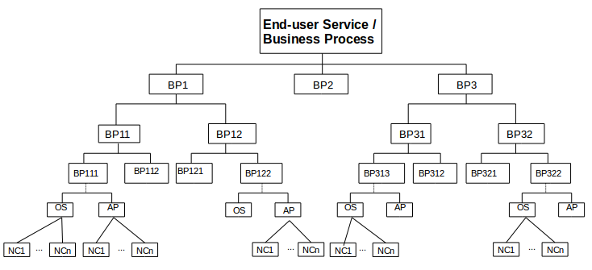

In order to build relevant hierarchical views, you need to identify the main business process or end-user service along with business processes that will comprise it. Then, you have to link the business processes among them within a hierarchy. Finally, at the bottom level business processes should be related to operating systems, applications, devices, etc. An example of such an organization is illustrated on the figure below. In the hierarchy, we differentiate two kinds of nodes according to their relation with native monitoring data collected by the monitoring engine:
|

|
Each monitoring view hierarchy is defined through a configuration file, in which each node is defined by a set of properties that permit to identify it along with its possible child nodes. The MVB utility of NGRT4N provides functionally that ease the creation and the edition of such configuration files. It maintains the structure of the hierarchy (relationship among nodes) internally and transparently to user. The following list describes the properties that user has to edit when editing a node.
| Property | Applicability | Description |
| Name | ALL | REQUIRED, this parameter provides a short name to the node. Used like label when representing or referencing the node on the operator console, its value can be for example, the name of device, system, application, business process, end-user service, etc. |
| Type | ALL | REQUIRED, the type property can be either Native Check or Business Process (default value). |
| Status Aggregation Rule | Business Process | REQUIRED, this parameter specifies the rule to use to update the status of the node according to the statuses of its child nodes. |
| Icon | ALL | REQUIRED, the icon property specifies the name of to use to represent the the node on the hierarchy map. The user has to select an images among a list of built-in icons, otherwise the default icon (representing a business process) will be used. |
| Description | ALL | OPTIONAL, this field holds a text that provides a more-descriptive information about the node. |
| Alarm Message | Native Check | OPTIONAL, this field holds a text message to show on event console when the state of the node becomes abnormal (when a critical or major event arises on the node). If there is not any message specified, the default message provided by the monitoring engine will be used. |
| Notification Message | Native Check | OPTIONAL, this field holds a text message to show on event console when the state of the node (is) becomes normal. If there is not any message specified, the default message provided by the monitoring engine will be used. |
| Related Native Check | Native Check | REQUIRED, this property holds the identifier of the monitoring data (collected by the monitoring engine) to link to the node. |